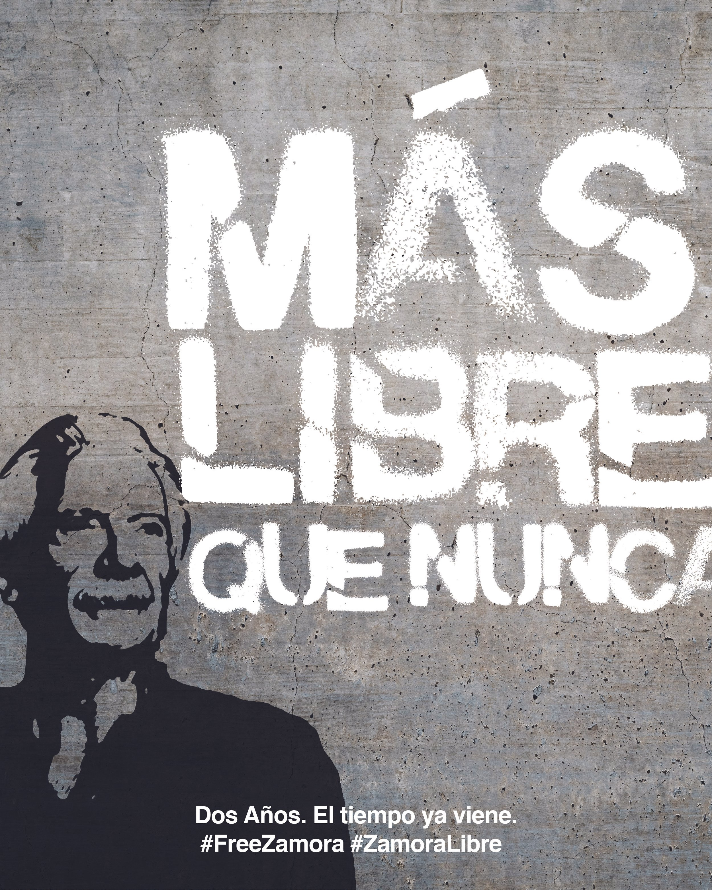
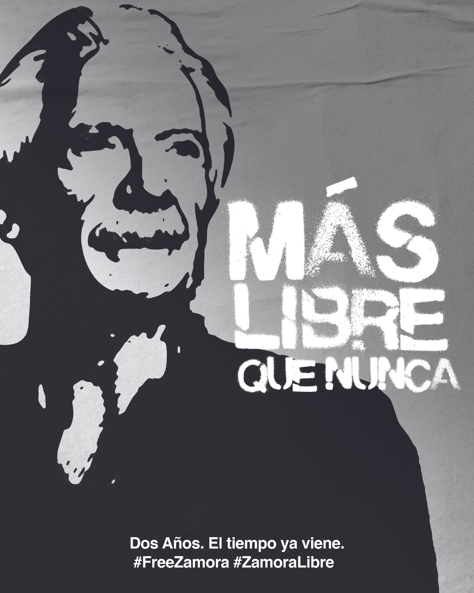
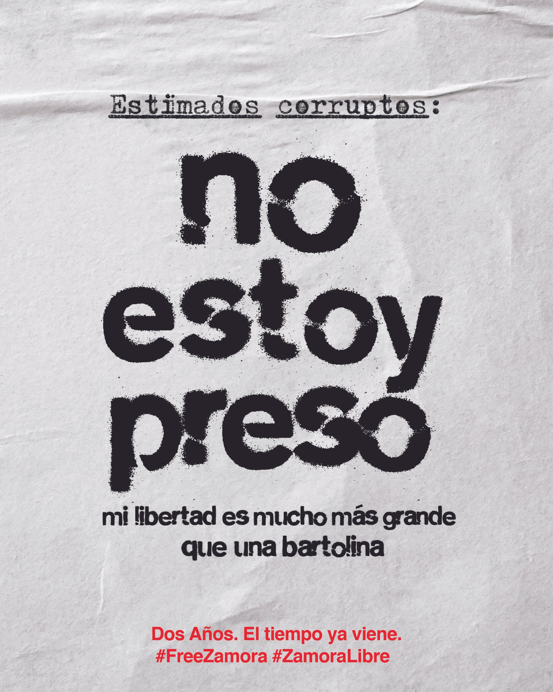
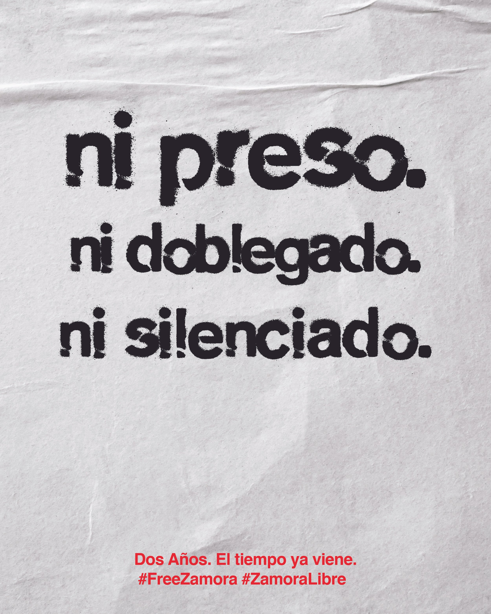
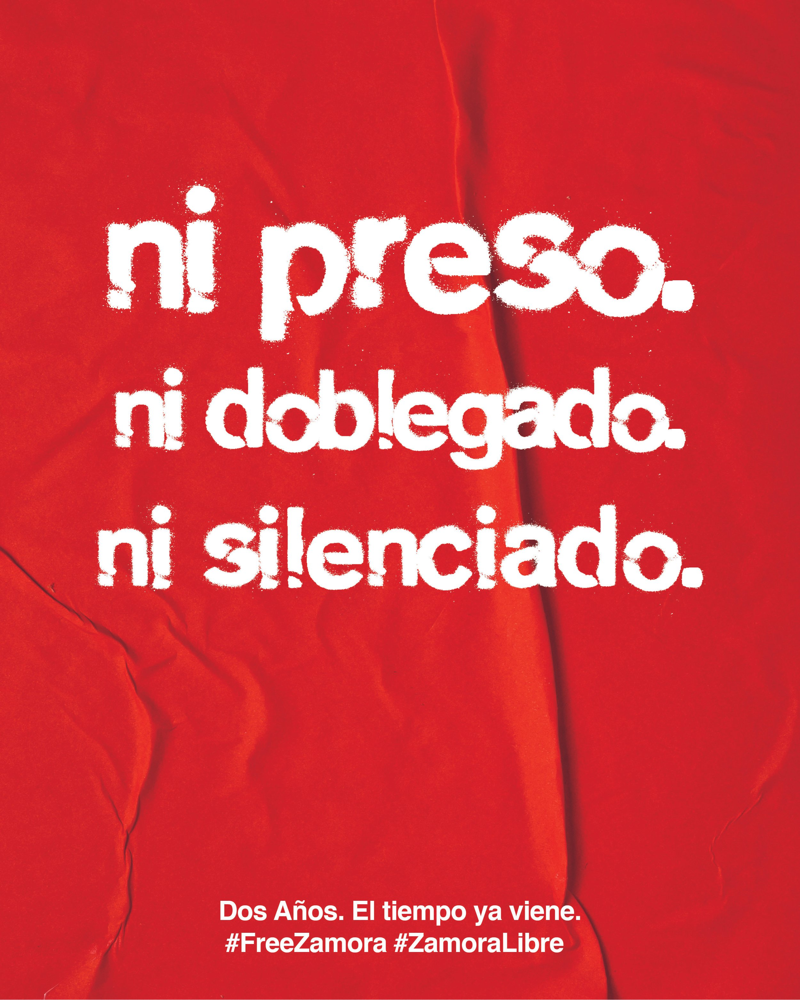
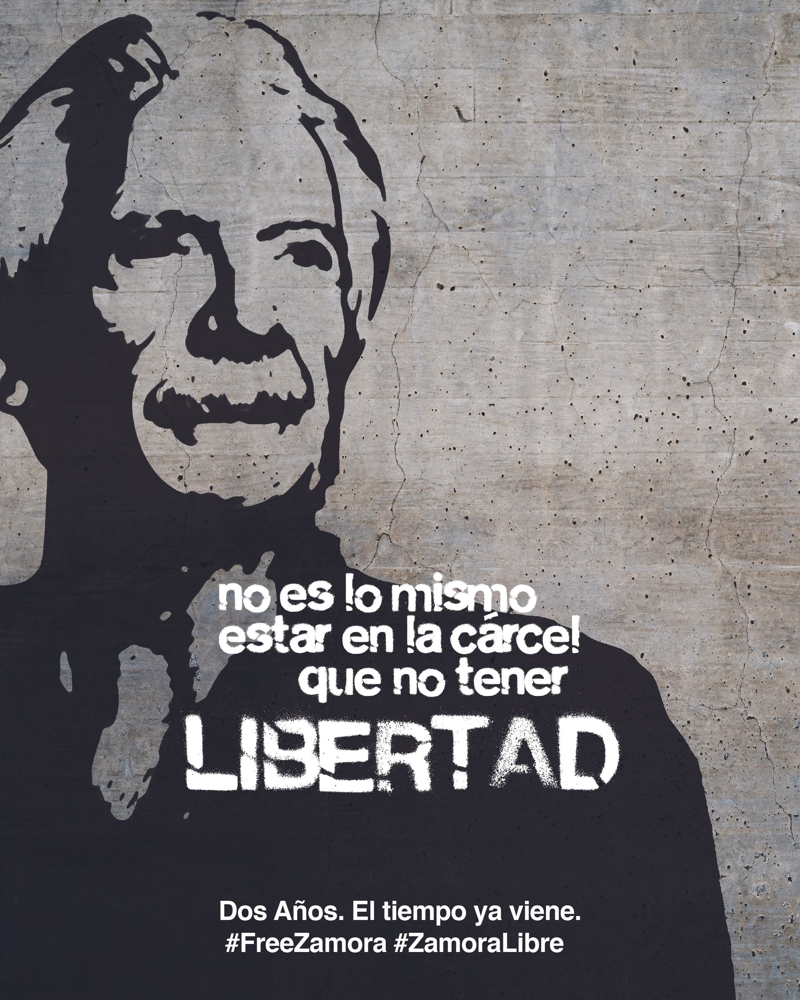

Ayúdanos a exigir la libertad de Jose Ruben Zamora en redes sociales usando la etiqueta #ZamoraLibre y #FreeZamora. Help us demand the freedom of Jose Ruben Zamora on social media using the hashtags #ZamoraLibre and #FreeZamora.

{kind=link}

{kind=link}

{kind=link}

{kind=link}

{kind=link}

{kind=link}
Mensajes sugeridos
El periodista #JoseRubénZamora pasó 1,295 días en prisión en Guatemala sin una condena firme. Hoy sigue bajo arresto domiciliario y con tres procesos abiertos. La ONU declaró arbitraria su detención. Es hora de cerrar los casos en su contra. #ZamoraLibre
Salir de la cárcel no es la libertad. #JoseRubénZamora sigue bajo arresto domiciliario y sin poder salir del país, mientras su proceso se entrampa en recusaciones. Exigimos que cese la persecución judicial. #ZamoraLibre
El periodismo no es un crimen. La persecución contra #JoseRubénZamora es un ataque directo a la libertad de prensa. Exigimos que se retiren todos los cargos. #ZamoraLibre
Su única condena fue anulada dos veces. Libertad plena para #JoseRubénZamora, un defensor de la verdad y la libertad de expresión. #ZamoraLibre
Suggested messages
Journalist #JoseRubénZamora spent 1,295 days in prison in Guatemala without a final conviction. He remains under house arrest and faces three open cases. The UN declared his detention arbitrary. It is time to close the cases against him. #FreeZamora
Leaving prison is not freedom. #JoseRubénZamora remains under house arrest and barred from leaving the country while his case stalls in recusal motions. End the judicial persecution. #FreeZamora
Journalism is not a crime. The persecution of #JoseRubénZamora is a direct attack on press freedom. All charges must be dropped. #FreeZamora
His only conviction has been annulled twice. Full freedom for #JoseRubénZamora, a defender of truth and freedom of expression. #FreeZamora